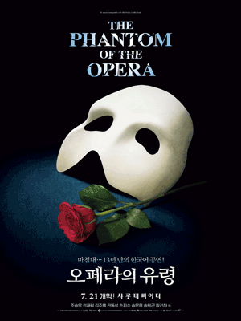
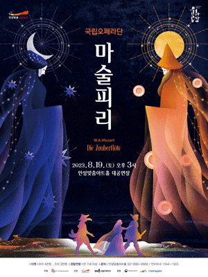

자세히 보기

제목 : 오페라의 유령
줄거리 : 13년 간의 긴 기다림… 마침내 한국의 유령이 온다! 환영과도 같은 무대 사라지지 않을 영원한 당신의 첫 감동! 13년 만에 오페라 하우스의 문이 열린다
줄거리 : 13년 간의 긴 기다림… 마침내 한국의 유령이 온다! 환영과도 같은 무대 사라지지 않을 영원한 당신의 첫 감동! 13년 만에 오페라 하우스의 문이 열린다
자세히 보기

제목 : 투란도트
줄거리 : 얼은처럼 차가운 공주 투란도트와 그녀의 사랑을 얻기위해 목숨을 걸고 수수께끼에 도전하는 칼라프왕자의 이야기
줄거리 : 얼은처럼 차가운 공주 투란도트와 그녀의 사랑을 얻기위해 목숨을 걸고 수수께끼에 도전하는 칼라프왕자의 이야기
자세히 보기

제목 : 마술피리
줄거리 : 모차르트의 대표작이자 전 세계인에게 잘 알려진 오페라 마술피리는 쉬카네더의 대본을 바탕으로 밤과 낮으로 상징되는 이성과 감성의 이분법적 대립 속에서 두 남녀가 갖가지 시험을 통과하며 결국 사랑을 이룬다는 내용이다.
줄거리 : 모차르트의 대표작이자 전 세계인에게 잘 알려진 오페라 마술피리는 쉬카네더의 대본을 바탕으로 밤과 낮으로 상징되는 이성과 감성의 이분법적 대립 속에서 두 남녀가 갖가지 시험을 통과하며 결국 사랑을 이룬다는 내용이다.